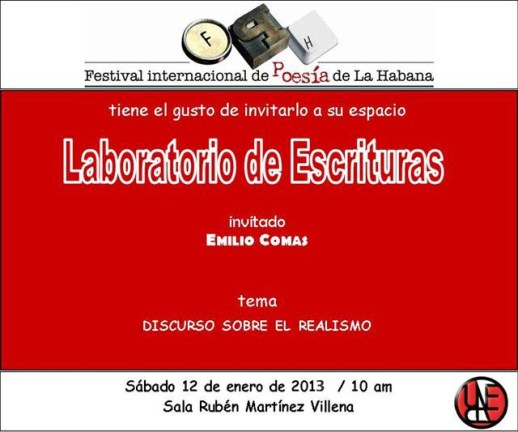

By Pedro López Cerviño. Alina Galliano es una poeta manzanillera radicada en Nueva York hace más de cuatro décadas.Ha cursado estudios de Psicología en Mercy College, Dobbs Ferry and holds a master degree in work Social at Fordham University, both in New York. They include his published books: Between the eyelid and cheek, …
Category Archive: delivery quick/fast delivery
Fast Delivery/Fast Delivery
Jan 10 2013
Tertulia South
El Festival Internacional de Poesía de La Habana y el Instituto Cubano del Libro, invitan a su próxima Tertulia del Sur con la Conducción de Pierre Bernet. Como invitados especiales para esta ocasión contaremos con la presencia de los poetas César López y Aitana Alberti, quienes leerán varios textosde su excelentísima obra, en compañía de …

El Festival Internacional de Poesía de la Habana tiene el gusto de invitarlo a su espacio: Laboratorio de Ecrituras.
El invitado será Emilio Comas.
Theme: Discurso sobre el Realismo
Este Sabado 12 in January of 2013 to the 10 am
En la sala Rubén Martinez Villena de la UNEAC
Posted on:
January 10, 2013
Jan 03 2013
awarded literary prizes Nicolás Guillén and alejo carpentier
La editorial Letras Cubanas y las fundaciones Nicolás Guillén y Alejo Carpentier dieron a conocer en La Habana los premios de poesía Nicolás Guillén y los de narrativa y ensayo Alejo Carpentier, of 2012, respectively. The jury of the prize of poetry Nicolás Guillén chose the book stretch marks, de Soleida Ríos. Por su parte el Premio …
Jan 03 2013
Granted the UNEAC Awards, 2012
Los Premios UNEAC de Literatura 2012, fueron entregados este viernes 21, en la Sala Villena de la Unión de Escritores y Artistas de Cuba, in Havana. En esta edición del certamen que desarrolla anualmente esa organización participaron 96 obras en las categorías de poesía, tale, ensayo histórico-social y traducción literaria. El lauro en POESÍA …
Recent Comments